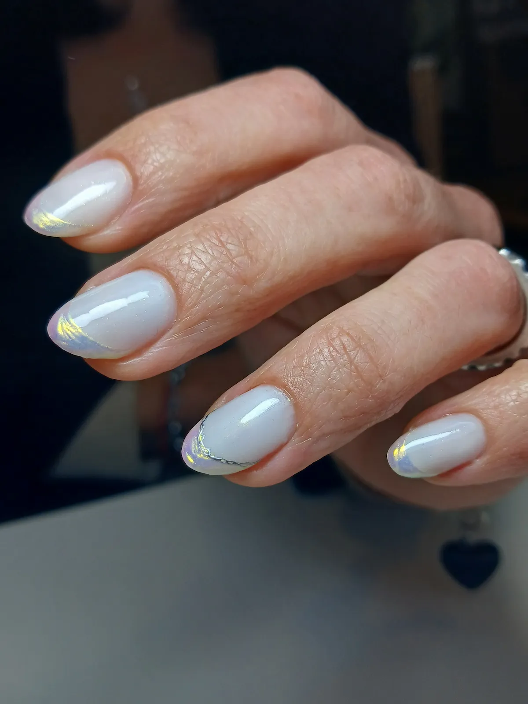
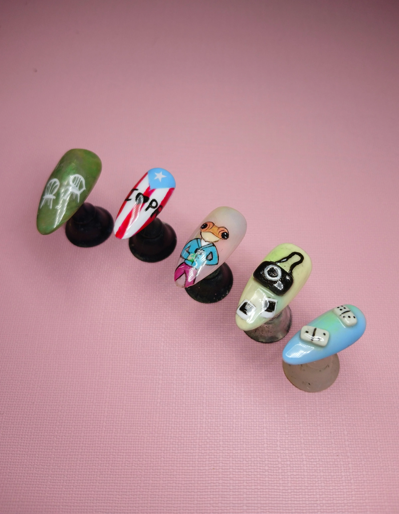
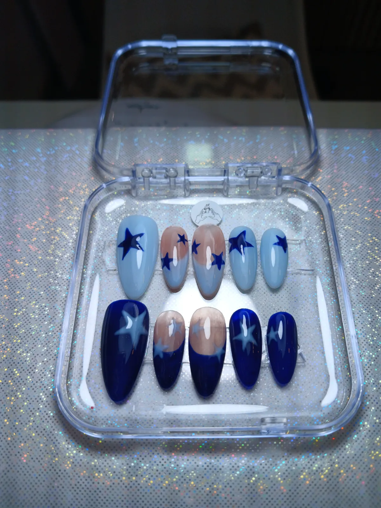

Soft Gel
Extensión flexible sobre tu uña, para sumar largo sin que se sienta pesada. Se retoca cada 21 días.
- Va bien para
- uñas naturales frágiles.
- No te lo recomiendo si
- trabajás con agua todo el tiempo.
Soft gel, kapping, semipermanente y nail art en el local de Martín Rodríguez 505. Atiendo de martes a sábado, con turno previo.

No todas las técnicas les sirven a todas las manos. En cada una te digo cuándo conviene y cuándo no.



Extensión flexible sobre tu uña, para sumar largo sin que se sienta pesada. Se retoca cada 21 días.
Capa de refuerzo sobre la uña natural: corrige imperfecciones, le da resistencia y mejora la forma. No la alarga; la protege para que crezca más fuerte y pareja.
Esmalte de larga duración sobre tu uña natural, sin rellenos ni grosor extra. Dura entre 15 y 21 días.
Diseños a pedido, desde un detalle mínimo hasta uña por uña.
Retiro del producto (gel, acrílico o semipermanente) con técnicas cuidadosas, sin limados agresivos ni desprendimientos forzados.
Para cuando no podés (o no querés) venir al local. Las diseño según tus medidas y se colocan sin cabina UV.

| Soft gel | Press on | |
|---|---|---|
| Aplicación | En el local, con cabina UV | En tu casa, en minutos |
| Duración | 21 días o más | 1 a 3 semanas |
| Apta para alérgicas | Depende | Sí |
| Apta para menores | No recomendado | Sí |
| Reutilizable | No | Sí |
Tono neutro, para el trabajo o el día a día.
Consultar por el Set ClásicoPuntas en blanco o perla, con acabado mate.
Consultar por el Set FrancesasBrillos delicados para eventos o fiestas.
Consultar por el Set Glitter Rosa
Hago uñas en Rosario hace más de tres años, y por el local ya pasaron más de 300 clientas.
Antes de empezar miro cómo es tu uña y te pregunto qué hacés con las manos todos los días. No todas las uñas son iguales, y el servicio tampoco debería serlo: por eso en cada técnica vas a ver para quién va y para quién no.
Trabajo con productos de buena calidad y con técnicas actualizadas, tanto en el local como en los sets de press on, que armo a mano.
Ver más trabajos en InstagramDepende de la técnica y de tus cuidados. En general los servicios se retocan cada 15 a 21 días. Yo te aviso cuándo conviene volver según tu tipo de uñas y tu estilo de vida; también podés agendar tu próximo turno en el momento del servicio.
No, siempre y cuando las retires correctamente (con agua tibia y aceite, sin forzarlas). Las press on son una de las opciones más amigables para la uña natural.
El soft gel se aplica en el local, requiere cabina UV y dura más. Las press on son postizas que te ponés sola en casa, sin químicos; van bien para alérgicas, menores o quienes tienen poco tiempo.
Sí. Las press on no contienen los monómeros que suelen causar alergias. También podemos ver si el semipermanente sobre tu uña natural es una opción para vos.
Sí, hacemos envíos. Consultá disponibilidad y costos por WhatsApp o pasá por el local.
Para los servicios en el local recomendamos esperar a un mayor desarrollo. Para menores, las press on son la opción más segura.
Para reservar un turno o consultar por las press on, escribime.